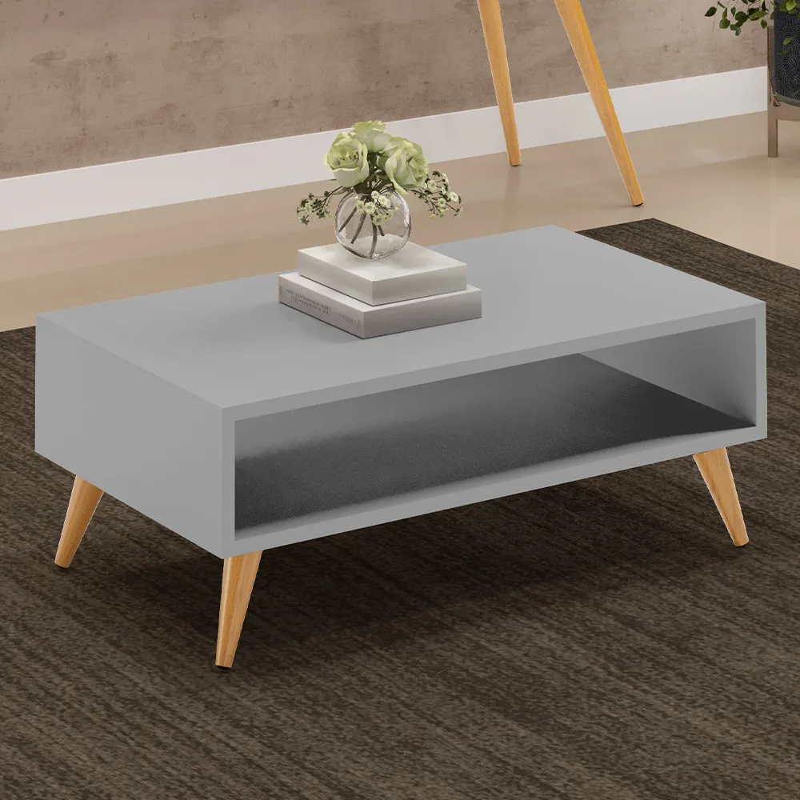

Mesa de centro
Mesa de centro moderna, cinza, com nicho inferior e pés de madeira inclinados, combinando simplicidade e elegância.
Mesa de Centro Para Sala de Estar Pés Palito Cannes L03 Cinza - Lyam Decor

Mesa de centro moderna, cinza, com nicho inferior e pés de madeira inclinados, combinando simplicidade e elegância.
Mesa de Centro Para Sala de Estar Pés Palito Cannes L03 Cinza - Lyam Decor